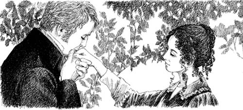

‘Em Có Chịu Lấy Anh Không?’
Catherine ngồi trong xe ngựa của Tướng quân Tilney. Cô khóc không ngừng.
‘Tướng quân đã rất tốt bụng với em tuần trước,’ Catherine nghĩ. ‘Tại sao bây giờ ông lại nổi giận với em?’
Hành trình đến Fullerton rất dài. Catherine phải ngồi xe đến mười một giờ liền. Đến khoảng sáu giờ chiều, Catherine nhìn thấy căn nhà của cha mình.
Cha mẹ của Catherine rất ngạc nhiên. Nhưng họ rất mừng. Sau đó Catherine kể hết mọi chuyện cho họ nghe.
‘Thật lạ làm sao,’ Bà Morland nói. ‘Tại sao con lại phải rời khỏi Tu viện Northanger? Mẹ rất xin lỗi. Nhưng bây giờ con đã về nhà rồi, Catherine. Quên nhà Tilney đi.’
Catherine không muốn quên nhà Tilney. Ngày hôm sau, cô viết thư cho Eleanor. Và gửi lời chúc tốt đẹp đến Henry.
‘Con sẽ không bao giờ gặp được nhà Tilney nữa,’ Bà Morland nói. ‘Và James cũng không định lấy ai hết. Thật kỳ lạ!’

Ba ngày trôi qua. Catherine rất buồn. Và rồi gia đình Morland có một vị khách — Anh Henry Tilney! Ông bà Morland rất ngạc nhiên. Nhưng Bà Morland nói, ‘Bạn của con gái tôi luôn được chào đón nồng nhiệt tại đây.’
Catherine không nói gì. Nhưng cô rất, rất vui. Henry đang ở đây — đến để gặp cô!
‘Em có muốn đi dạo trong vườn với anh không?’ Henry Tilney hỏi.
‘Vâng,’ Catherine đáp nhỏ.
Chẳng mấy chốc Henry và Catherine đã ở một mình. Những lời đầu tiên của Henry là về tình yêu.
‘Anh muốn hỏi em một câu hỏi,’ anh nói. ‘Anh yêu em, Catherine. Em có chịu lấy anh không? Hãy nói câu trả lời của em nhé.’
Catherine không nói nên lời. Nhưng Henry biết câu trả lời của cô. Họ nắm tay nhau hạnh phúc.

‘Bố em sẽ nói gì?’ Catherine hỏi. ‘Tướng quân Tilney đuổi em khỏi nhà của ông. Tại sao vậy?’
‘Thứ Hai tuần trước anh đã quay trở lại Tu viện,’ Henry nói. ‘Lúc đó em không ở đó. Anh đã nói chuyện với bố anh. “Đừng bao giờ gặp lại Catherine nữa,” bố anh nói.’
‘Nhưng em chẳng làm gì sai cả,’ Catherine nói.
‘Đúng vậy, em không làm gì sai cả,’ Henry nói. ‘Anh sẽ kể hết mọi chuyện cho em biết.’ Anh mỉm cười với Catherine.
‘Bố anh thích những người giàu có,’ anh nói. ‘Bố anh đã nói chuyện với John Thorpe ở Bath.’
‘John Thorpe?’ Catherine nói. ‘Anh ta đã nói gì với bố anh về em?’
‘John Thorpe nói, “Bố của Cô Morland rất giàu. Và nhà Allen cũng có tiền. Họ sẽ trao hết tiền cho Cô Morland.” Đó chính là những lời hắn ta nói,’ Henry nói.
‘Nhưng bố em không giàu lắm,’ Catherine nói. ‘Và nhà Allen cũng sẽ không cho em bất kỳ khoản tiền nào.’
‘Anh biết điều đó,’ Henry nói. ‘John Thorpe đã nói dối bố anh. Nhưng rồi bố anh đã nghe sự thật ở London. John Thorpe đã nói sự thật với ông ấy. Bố anh rất tức giận và đuổi em khỏi Tu viện Northanger.’
‘Nhà Thorpes là những người bạn tồi,’ Catherine nói. ‘Nhưng anh đã nói gì với bố mình?’
‘Anh đã kể về tình yêu của anh đối với em cho ông ấy. Anh không quan tâm đến tiền bạc. Anh đã quay trở về Woodston. Và rồi anh đến đây.’
‘Em rất vui!’ Catherine nói. ‘Chúng ta phải nói mọi chuyện với bố mẹ em ngay thôi.’
Henry đã nói chuyện với Ông Morland.
‘Thưa ngài, con muốn cưới Catherine,’ anh nói.
Ông bà Morland rất vui. Họ thích Henry Tilney.
‘Nhưng liệu Tướng quân Tilney có đồng ý cho cuộc hôn nhân này không?’ Ông Morland hỏi.
Henry đã quay trở về Tu viện Northanger. Vài ngày sau, một lá thư của Eleanor gửi đến.
Catherine nói với cha mẹ ngay lập tức. Họ cũng vui mừng như con gái mình.
Một ngày nọ vào mùa hè, Catherine đã kết hôn với Henry Tilney. Eleanor và người đàn ông trẻ giàu có của cô ấy cũng kết hôn vào cùng thời điểm. Và Tướng quân Tilney mỉm cười với tất cả mọi người.
Đó là một ngày hạnh phúc.
Mục lục
- Trang bìa
- Trang bản quyền
- Mục lục
- Ghi chú về tác giả
- Ghi chú về câu chuyện này
- Nhân vật trong câu chuyện
- 1 Catherine đến Bath
- 2 Những người bạn mới của Catherine
- 3 John và James
- 4 Một vũ hội tại Upper Rooms
- 5 ‘Tại sao anh lại nói dối tôi?’
- 6 Catherine và gia đình Tilney
- 7 Isabella đang yêu
- 8 Đại úy Frederick Tilney
- 9 Isabella và James
- 10 Tu viện Northanger
- 11 ‘Thưa cô Morland kính yêu!’
- 12 Chuyến thăm Woodston
- 13 Một bức thư từ Isabella
- 14 Catherine về nhà
- 15 ‘Cô sẽ lấy tôi chứ?’